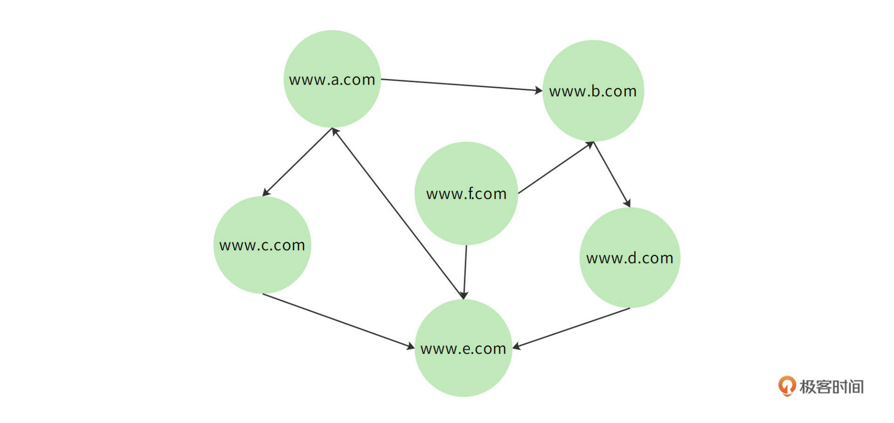
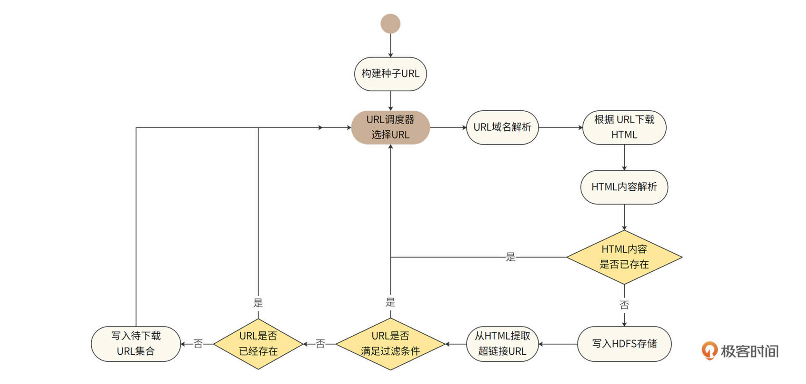
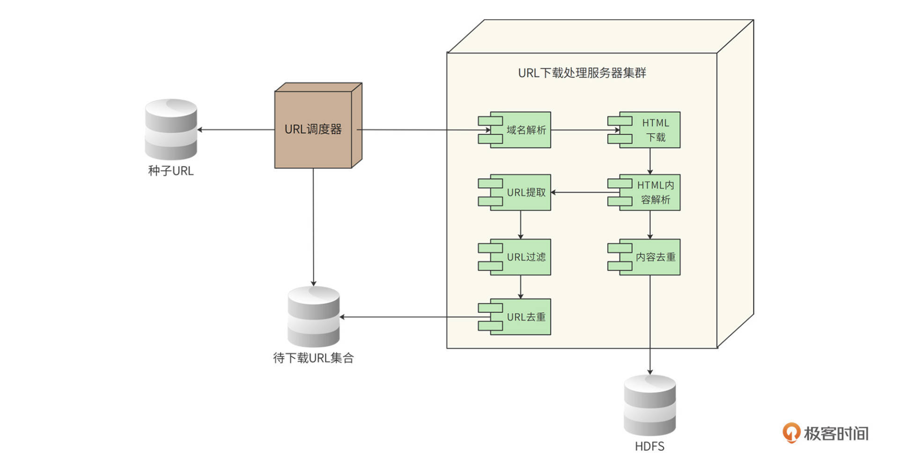
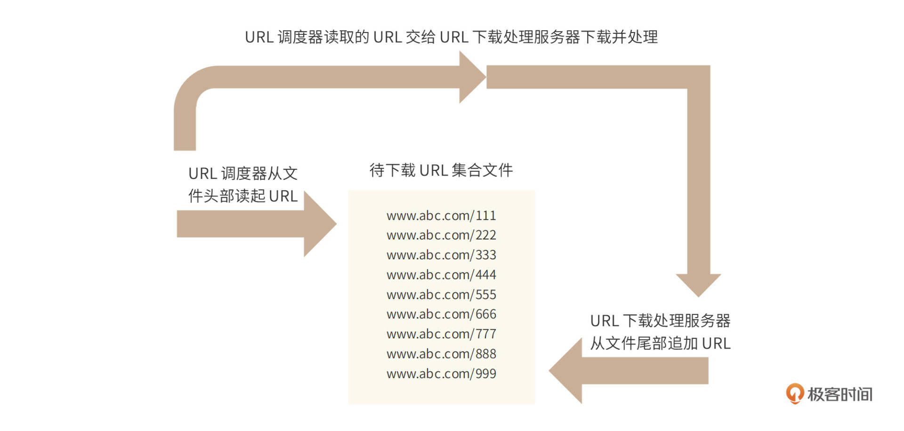
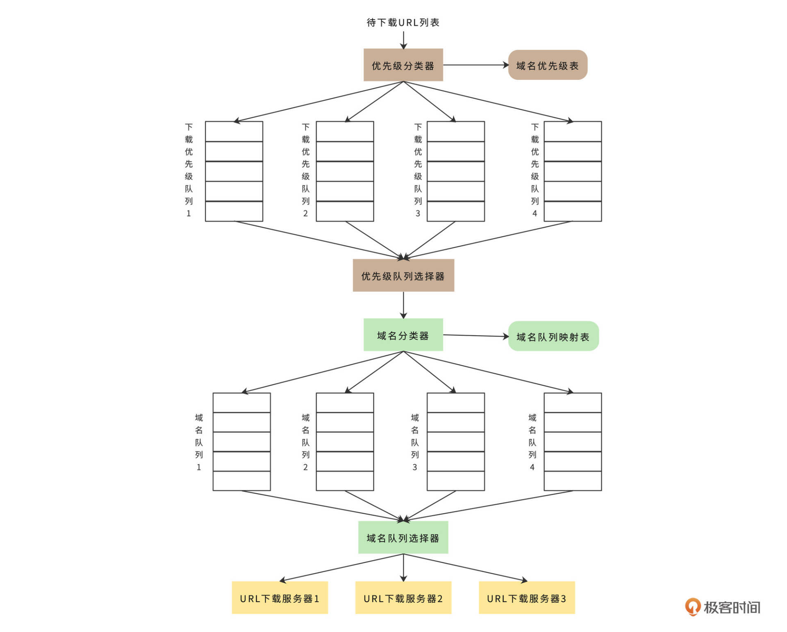

- 00 开篇词 “附身”大厂架构师，身临其境设计高并发系统.md
- 01 软件建模与文档：架构师怎样绘制系统架构蓝图？.md
- 02 高并发架构设计方法：面对高并发，怎么对症下药？.md
- 03 短 URL 生成器设计：百亿短 URL 怎样做到无冲突？.md
- 04 网页爬虫设计：如何下载千亿级网页？.md
- 05 网盘系统设计：万亿 GB 网盘如何实现秒传与限速？.md
- 06 短视频系统设计：如何支持三千万用户同时在线看视频？.md
- 07 海量数据处理技术回顾：为什么分布式会遇到 CAP 难题？.md
- 08 秒杀系统设计：你的系统可以应对万人抢购盛况吗？.md
- 09 交友系统设计：哪种地理空间邻近算法更快？.md
- 10 搜索引擎设计：信息搜索怎么避免大海捞针？.md
- 11 反应式编程框架设计：如何使方法调用无阻塞等待？.md
- 12 高性能架构的三板斧：分析系统性能问题从哪里入手？.md
- 13 微博系统设计：怎么应对热点事件的突发访问压力？.md
- 14 百科应用系统设计：机房被火烧了系统还能访问吗？.md
- 15 限流器设计：如何避免超预期的高并发压力压垮系统？.md
- 16 高可用架构的十种武器：怎么度量系统的可用性？.md
- 17 Web 应用防火墙：怎样拦截恶意用户的非法请求？.md
- 18 加解密服务平台：如何让敏感数据存储与传输更安全？.md
- 19 许可型区块链重构：无中心的区块链怎么做到可信任？.md
- 20 网约车系统设计：怎样设计一个日赚 5 亿的网约车系统？.md
- 21 网约车系统重构：如何用 DDD 重构网约车系统设计？.md
- 22 大数据平台设计：如何用数据为用户创造价值？.md
- 结束语 一个架构师的一天.md
04 网页爬虫设计：如何下载千亿级网页？
你好，我是李智慧。
在互联网早期，网络爬虫仅仅应用在搜索引擎中。随着大数据时代的到来，数据存储和计算越来越廉价和高效，越来越多的企业开始利用网络爬虫来获取外部数据。例如：获取政府公开数据以进行统计分析；获取公开资讯以进行舆情和热点追踪；获取竞争对手数据以进行产品和营销优化等等。
网络爬虫有时候也被称为网络机器人，或者网络蜘蛛。我们准备开发一个全网爬虫，爬取全（中文）互联网的公开网页，以构建搜索引擎和进行数据分析。爬虫名称为“Bajie（八戒）”。
Bajie的技术挑战包括：如何不重复地获取并存储全网海量URL？如何保证爬虫可以快速爬取全网网页但又不会给目标网站带来巨大的并发压力？接下来我们就来看看Bajie的需求与技术架构。
需求分析
Bajie的功能比较简单，这里不再赘述。
性能指标估算
因为互联网网页会不断产生，所以全网爬虫Bajie也是一个持续运行的系统。根据设计目标，Bajie需要每个月从互联网爬取的网页数为20亿个，平均每个页面500KB，且网页需存储20年。
Bajie的存储量和TPS（系统吞吐量）估算如下。
- 每月新增存储量- 估计平均每个页面500KB，那么每个月需要新增存储1PB。
$\small 20亿\times500KB=1PB$
- 总存储空间- 网页存储有效期20年，那么需要总存储空间240PB。
$\small 1PB\times12个月\times20年=240PB$
- TPS- Bajie的TPS应为800。
$\small 20亿\div（30\times24\times60\times60）\approx800$
非功能需求
Bajie需要满足的非功能需求如下。
- 伸缩性：当未来需要增加每月爬取的网页数时，Bajie可以灵活部署，扩大集群规模，增强其爬取网页的速度。也就是说，Bajie必须是一个分布式爬虫。
- 健壮性：互联网是一个开放的世界，也是一个混乱的世界，服务器可能会宕机，网站可能失去响应，网页HTML可能是错误的，链接可能有陷阱……所以Bajie应该能够面对各种异常，正常运行。
- 去重：一方面需要对超链接URL去重，相同的URL不需要重复下载；另一方面还要对内容去重，不同URL但是相同内容的页面也不需要重复存储。
- 扩展性：当前只需要爬取HTML页面即可，将来可能会扩展到图片、视频、文档等内容页面。- 此外，Bajie必须是“礼貌的”。爬虫爬取页面，实际上就是对目标服务器的一次访问，如果高并发地进行访问，可能会对目标服务器造成比较大的负载压力，甚至会被目标服务器判定为DoS攻击。因此Bajie要避免对同一个域名进行并发爬取，还要根据目标服务器的承载能力增加访问延迟，即在两次爬取访问之间，增加等待时间。
并且，Bajie还需要遵循互联网爬虫协议，即目标网站的robots.txt协议，不爬取目标网站禁止爬取的内容。比如www.zhihu.com的robots.txt内容片段如下。
User-agent: bingbot
Disallow: /appview/
Disallow: /login
Disallow: /logout
Disallow: /resetpassword
Disallow: /terms
Disallow: /search
Allow: /search-special
Disallow: /notifications
Disallow: /settings
Disallow: /inbox
Disallow: /admin_inbox
Disallow: /*?guide*
Zhihu约定Bing爬虫可以访问和不可以访问的路径都列在robots.txt中，其他的Google爬虫等也在robots.txt中列明。- robots.txt还可以直接禁止某个爬虫，比如淘宝就禁止了百度爬虫，淘宝的robots.txt如下。
User-agent: Baiduspider
Disallow: /
User-agent: baiduspider
Disallow: /
淘宝禁止百度爬虫访问根目录，也就是禁止百度爬取该网站所有页面。- robots.txt在域名根目录下，如www.taobao.com/robots.txt。Bajie应该首先获取目标网站的robots.txt，根据爬虫协议构建要爬取的URL超链接列表。
概要设计
Bajie的设计目标是爬取数千亿的互联网页，那么Bajie首先需要得到这千亿级网页的URL，该如何获得呢？
全世界的互联网页面事实上是一个通过超链接连接的巨大网络，其中每个页面都包含一些指向其他页面的URL链接，这些有指向的链接将全部网页构成一个有向（网络）图。如下图所示，每个节点是一个网页，每条有向的边就是一个超链接。

上图中，www.a.com包含两个超链接，分别是www.b.com和www.c.com，对应图中就是节点www.a.com指向节点www.b.com和节点www.c.com的边。同样地，www.b.com节点也会指向www.d.com节点。
如果我们从这个图中的某个节点开始遍历，根据节点中包含的链接再遍历其指向的节点，再从这些新节点遍历其指向的节点，如此下去，理论上可以遍历互联网上的全部网页。而将遍历到的网页下载保存起来，就是爬虫的主要工作。
所以，Bajie不需要事先知道数千亿的URL，然后再去下载。Bajie只需要知道一小部分URL，也就是所谓的种子URL，然后从这些种子URL开始遍历，就可以得到全世界的URL，并下载全世界的网页。
Bajie的处理流程活动图如下。

首先Bajie需要构建种子URL，它们就是遍历整个互联网页面有向图的起点。种子URL将影响遍历的范围和效率，所以我们通常选择比较知名的网站的主要页面（比如首页）作为种子URL。
然后，URL调度器从种子URL中选择一些URL进行处理。后面将在详细介绍中说明URL调度器的算法原理。
Bajie对选择出来的URL经过域名解析后，下载得到HTML页面内容，进而解析HTML页面，分析该内容是否已经在爬虫系统中存在。因为在互联网世界中，大约有三分之一的内容是重复的，下载重复的内容就是在浪费计算和存储资源。如果内容已存在，就丢弃该重复内容，继续从URL调度器获取URL；如果不存在，就将该HTML页面写入HDFS存储系统。
然后，Bajie进一步从已存储的HTML中提取其内部包含的超链接URL，分析这些URL是否满足过滤条件，即判断URL是否在黑名单中，以及URL指向的目标文件类型是否是爬虫要爬取的类型。
如果HTML中的某些URL满足过滤条件，那么就丢弃这些URL；如果不满足过滤条件，那么，进一步判断这些URL是否已经存在，如果已经存在，就丢弃该URL，如果不存在，就记录到待下载URL集合。URL调度器从待下载URL集合中选择一批URL继续上面的处理过程。
这里需要注意，想判断URL是否已经存在，就要判断这个URL是否已经在待下载URL集合中。此外，还需要判断这个URL是否已经下载得到HTML内容了。只有既不是待下载，也没被下载过的URL才会被写入待下载URL集合。
可以看到，在爬虫的活动图里是没有结束点的，从开始启动，就不停地下载互联网的页面，永不停息。其中，URL调度器是整个爬虫系统的中枢和核心，也是整个爬虫的驱动器。爬虫就是靠着URL调度器源源不断地选择URL，然后有节奏、可控地下载了整个互联网，所以URL调度器也是爬虫的策略中心。
据此，Bajie的部署图如下。

Bajie系统中主要有两类服务器，一类是URL调度器服务器；一类是URL下载处理服务器集群，它是一个分布式集群。
URL调度器从种子URL或待下载URL集合中载入URL，再根据调度算法，选择一批URL发送给URL下载处理服务器集群。这个下载处理服务器集群是由多台服务器组成的，根据需要达到的TPS，集群规模可以进行动态伸缩，以实现需求中的伸缩性要求。
每台URL下载处理服务器先得到分配给自己的一组URL，再启动多个线程，其中每个线程处理一个URL，按照前面的流程，调用域名解析组件、HTML下载组件、HTML内容解析组件、内容去重组件、URL提取组件、URL过滤组件、URL去重组件，最终将HTML内容写入HDFS，并将待下载URL写入待下载URL集合文件。
分布式爬虫
需要注意的是，URL下载处理服务器采用分布式集群部署，主要是为了提高系统的吞吐能力，使系统满足伸缩性需求。而URL调度器则只需要采用一台高性能的服务器单机部署即可。
事实上，单机URL调度器也完全能够满足目前800TPS的负载压力，以及将来的伸缩要求。因为800TPS对于URL调度器而言其实就是每秒产生800个URL而已，计算压力并不大，单台服务器完全能够满足。
同时URL调度器也不需要考虑单服务器宕机导致的可用性问题，因为爬虫并不是一个实时在线系统，如果URL调度器宕机，只需要重新启动即可，并不需要多机部署高可用集群。
相对应地，每个URL在URL下载处理服务器上的计算负载压力要大得多，需要分布式集群处理，也因此大规模爬虫被称为分布式爬虫，Bajie就是一个分布式爬虫。
详细设计
Bajie详细设计关注3个技术关键点：URL调度器算法、去重算法、高可用设计。
URL调度器算法
URL调度器需要从待下载URL集合中选取一部分URL进行排序，然后分发给URL下载服务器去下载。待下载URL集合中的URL是从下载的HTML页面里提取出来，然后进行过滤、去重得到的。一个HTML页面通常包含多个URL，每个URL又对应一个页面，因此，URL集合数量会随着页面不断下载而指数级增加。
待下载URL数量将远远大于系统的下载能力，URL调度器就需要决定当前先下载哪些URL。
如果调度器一段时间内选择的都是同一个域名的URL，那就意味着我们的爬虫将以800 TPS的高并发访问同一个网站。目标网站可能会把爬虫判定为DoS攻击，从而拒绝请求；更严重的是，高并发的访问压力可能导致目标网站负载过高，系统崩溃。这样的爬虫是“不礼貌”的，也不是Bajie的设计目标。
前面说过，网页之间的链接关系构成一个有向图，因此我们可以按照图的遍历算法选择URL。图的遍历算法有深度优先和广度优先两种，深度优先就是从一个URL开始，访问网页后，从里面提取第一个URL，然后再访问该URL的页面，再提取第一个URL，如此不断深入。
深度优先需要维护较为复杂的数据结构，而且太深的下载深度导致下载的页面非常分散，不利于我们构建搜索引擎和数据分析。所以我们没有使用深度优先算法。
那广度优先算法如何呢？广度优先就是从一个URL开始，访问网页后，从中得到N个URL，然后顺序访问这个N个URL的页面，然后再从这N个页面中提取URL，如此不断深入。显然，广度优先实现更加简单，获取的页面也比较有关联性。
图的广度优先算法通常采用队列来实现。首先，URL调度器从队列头出队列（dequeue）取一个URL，交给URL下载服务器，下载得到HTML，再从HTML中提取得到若干个URL入队列（enqueue）到队列尾，URL调度器再从队列头出队列（dequeue）取一个URL……如此往复，持续不断地访问全部互联网页，这就是互联网的广度优先遍历。
事实上，由于待下载URL集合存储在文件中，URL下载服务器只需要向待下载URL集合文件尾部追加URL记录，而URL调度器只需要从文件头顺序读取URL，这样就天然实现了先进先出的广度优先算法，如下图。

但是，广度优先搜索算法可能会导致爬虫一段时间内总是访问同一个网站，因为一个HTML页面内的链接常常是指向同一个网站的，这样就会使爬虫“不礼貌”。
通常我们针对一个网站，一次只下载一个页面，所以URL调度器需要将待下载URL根据域名进行分类。此外，不同网站的信息质量也有高低之分，爬虫应该优先爬取那些高质量的网站。优先级和域名都可以使用不同队列来区分，如下图。

首先优先级分类器会根据网页内容质量将域名分类（后面专栏会讲PageRank质量排名算法），并为不同质量等级的域名设置不同的优先级，然后将不同优先级记录在“域名优先级表”中。
接下来，按照广度优先算法，URL列表会从待下载URL集合文件中装载进来。根据“域名优先级表”中的优先级顺序，优先级分类器会将URL写入不同的队列中。
下一步，优先级队列选择器会根据优先级使用不同的权重，从这些优先级队列中随机获取URL，这样使得高优先级的URL有更多机会被选中。而被选中的URL都会交由域名分类器进行分类处理。域名分类器的分类依据就是“域名队列映射表”，这个表中记录了不同域名对应的队列。所以域名分类器可以顺利地将不同域名的URL写入不同的域名队列中。
最后，域名队列选择器将轮询所有的域名队列，从其中获得URL并分配给不同的URL下载服务器，进而完成下载处理。
去重算法
爬虫的去重包括两个方面，一个是URL，相同URL不再重复下载；一个是内容，相同页面内容不再重复存储。去重一方面是提高爬虫效率，避免无效爬取；另一方面提高搜索质量，避免相同内容在搜索结果中重复出现。URL去重可以使用布隆过滤器以提高效率。
内容去重首先要判断内容是否重复，由于爬虫存储着海量的网页，如果按照字符内容对每一个下载的页面都去和现有的页面比较是否重复，显然是不可能的。
Bajie计算页面内容的MD5值，通过判断下载页面的内容MD5值是否已经存在，判断内容是否重复。
如果把整个HTML内容都计算MD5，那么HTML中的微小改变就会导致MD5不同，事实上，不同网站即使相同内容的页面，也总会改成自己的HTML模板，导致HTML内容不同。
所以，比较内容重复的时候，需要将HTML里面的有效内容提取出来，也就是提取出去除HTML标签的文本信息，针对有效内容计算MD5。更加激进的做法是从有效内容中抽取一段话（比如最长的一句话），计算这段话的MD5，进而判断重复。
而一个内容MD5是否存在，需要在千亿级的数据上查找，如果用Hash表处理，计算和内存存储压力非常大，我们将用布隆过滤器代替Hash表，以优化性能。
高可用设计
Bajie的可用性主要关注两个方面，一是URL调度器或URL下载处理服务器宕机，二是下载超时或内容解析错误。
由于Bajie是一个离线系统，暂时停止爬取数据的话，不会产生严重的后果，所以Bajie并不需要像一般互联网系统那样进行高可用设计。但是当服务器宕机后重启时，系统需要能够正确恢复，保证既不会丢失数据，也不会重复下载。
所以，URL调度器和URL下载处理服务器都需要记录运行时状态，即存储本服务器已经加载的URL和已经处理完成的URL，这样宕机恢复的时候，就可以立刻读取到这些状态数据，进而使服务器恢复到宕机前的状态。对于URL下载处理服务器，Bajie采用Redis记录运行时状态数据。
此外，为了防止下载超时或内容解析错误，URL下载处理服务器会采用多线程（池）设计。每个线程独立完成一个URL的下载和处理，线程也需要捕获各种异常，不会使自己因为网络超时或者解析异常而退出。
小结
架构设计是一个权衡的艺术，不存在最好的架构，只存在最合适的架构。架构设计的目的是解决各种业务和技术问题，而解决问题的方法有很多种，每一种方法都需要付出各自的代价，同时又会带来各种新的问题。架构师就需要在这些方法中权衡选择，寻找成本最低的、代价最小的、自己和团队最能驾驭得住的解决方案。
因此，架构师也许不是团队中技术最好的那个人，但一定是对问题和解决方案优缺点理解最透彻的那个人。很多架构师把高可用挂在嘴上。可是，你了解你的系统的高可用的目的是什么吗？你的用户能接受的不可用下限在哪里？你为高可用付出的代价是什么？这些代价换来的回报是否值得？
我们在Bajie的设计中，核心就是URL调度器。通常在这样的大规模分布式系统中，核心组件是不允许单点的，也就是不允许单机部署，因为单机宕机就意味着核心功能的故障，也就意味着整个系统无法正常运行。
但是如果URL调度器采用分布式集群架构提高可用性，多服务器共同进行URL调度，就需要解决数据一致性和数据同步问题，反而会导致系统整体处理能力下降。而Bajie采用单机部署的的方式，虽然宕机时系统无法正常运行，但是只要在运维上保证能快速重新启动，长期看，系统整体处理能力反而更高。
此外，对于一个千亿级网页的爬虫系统而言，最主要的技术挑战应该是海量文件的存储与计算，这也确实是早期搜索引擎公司们的核心技术。但是，自从Google公开自己的大数据技术论文，而Hadoop开源实现了相关技术后，这些问题就变得容易很多了。Bajie的海量文件存储就使用了Hadoop分布式文件系统HDFS，我会在后面的《常见海量数据处理技术回顾》这一讲详细讨论它。
思考题
一个设计良好的爬虫需要面对的情况还有很多，你还能想到哪些文中没提及的情况？最好也能和我聊聊对应的设计方案。
欢迎在评论区分享你的思考，或者提出对这个设计文档的评审意见，我们共同进步。
© 2019 - 2023 Liangliang Lee. Powered by Vert.x and hexo-theme-book.